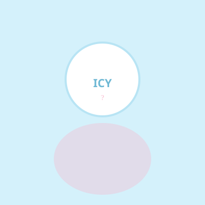
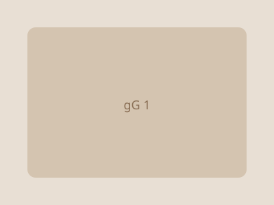
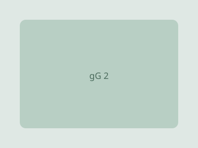
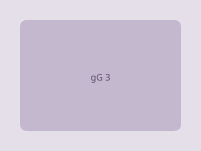

2025.06 — 2025.09
公司名称 · 岗位
用户数据分析、内容运营与社区舆情机制搭建。
- 活动方案制定、落地协作与数据复盘
- 使用 Python / Excel 完成日常分析

XX 岁，就读于 XX 大学。喜欢海外运营、内容创作和数据分析，也把游戏、AI 工具和日常生活连在一起记录。
这个网站是我的小小世界——浅蓝、温柔、带一点日系与三丽鸥式的可爱。
选择你想了解的部分 ↓
小小的兴趣，持续提供灵感。



把真实经历填进来即可。
用户数据分析、内容运营与社区舆情机制搭建。
全球化运营、商家维护与跨境营销活动。
喜欢研究玩法，也喜欢和玩家一起玩。
RPG、策略、独立游戏，偏爱有故事感的作品。
和朋友们通宵通关，或在排位里第一次打到目标段位。
团队协作、耐心试错，也培养了对系统设计的兴趣。
日常会用到的一些 AI 工具。
写作润色、代码辅助、头脑风暴与思路整理。
这个网站就是用 Cursor 搭建的，边聊边改很方便。
积分商城、指令配置与全自动化流程搭建。
我理解和实践的一套基础流程。
明确监测品牌声量、热点事件或活动效果。
从社媒、新闻、论坛等渠道抓取，注意合规脱敏。
去重去噪，做情感标注与主题分类。
Excel、Python 或 BI 工具输出趋势与词云。
输出简报，对负面舆情拟定回应方案。
最近在追的、反复看的，以及想推荐的。